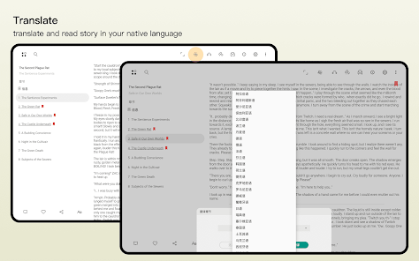

FanFiction.Net 官方 App 账：这钱我该不该花？
它现在免费，但如果哪天要付费呢？按轻度读者、主力读者、作者三类人，把官方 App 给的功能边界、省的时间、替代方案一笔笔算清楚。
它到底值不值得掏钱？
先说明白：FanFiction.Net官网 的官方 App 目前所有功能对用户都是免费开放的——没有付费墙、没有订阅、没有买断，至少从 v64 到 v66 这几个大版本迭代里，我没看到任何把核心功能锁在付费后面的迹象。那为什么还要写"付费决策账本"？因为免费不等于无成本——你在它上面投入的时间就是最真实的付费。而且如果哪天 FF.net 扛不住服务器成本开始收费了，你得提前算好：哪些功能是刚需，值那个价，哪些无所谓。
先拉一张功能边界清单，免费版现在给的：
- 阅读侧：无限在线浏览、章节收藏（Favorites / Follows）、离线下载、内置 TTS 朗读（v61+ HD 声线）、Android Auto 车载朗读、阅读进度记住
- 写作侧：Document Manager 文档上传管理（支持 .story / .docx / .pages 三种格式）、v65 自定义标签、元信息填写（标题、摘要、分级、CP、警告）、故事发布与章节管理
- 同步侧：Favorites / Follows / 我的故事 / 账号设置（v66+）云端同步；但章节正文、阅读历史、精确到段落的进度只存在本机
- 版本迭代：v64 加了 .pages 支持，v65 加了标签，v66 一口气修了五个文档编辑器 bug 还补了账号设置同步
这就是全部免费给的东西。没有广告去除、没有高级统计面板、没有什么"Pro 版专属主题"——FF.net 的思路很清晰：先把社区养大，商业化以后再说。
三类人算三种账
轻度读者：完全不需要掏一分钱
什么是轻度？一个月打开 App 不超过 5 次，每次追一两个 Fandom 的热门更新，读个三五章就关。
对这类人来说，官方 App 给的功能全剩：在线浏览够用，Favorites 存一下就够了，离线下载和 TTS 根本用不上。免费版的功能边界比他们的需求边界宽得多——宽出好几个量级。
如果 FF.net 明天开始收费，轻度读者的第一反应应该是："哦，那我用网页端或者第三方阅读器就好了。" 网页端手机上体验差一点，但能看；第三方工具比如 FanFicFare 的各种客户端，虽然界面简陋但功能够用。轻度读者的切换成本几乎为零，没必要为了那点便利性掏钱。真要好奇想试一下，直接下载装一下也没什么成本。
主力读者：TTS + Android Auto 已经把时间账算通了
主力读者的画像：每天必刷 Follows 列表，收藏里压着三四十本长篇连载，通勤、午休、睡前都在看。
这类人真正用得上的功能就两个：离线下载和 TTS 朗读（加上 Android Auto 就是三个）。
离线下载的价值很直接——地铁里没信号的时候，你收藏的那些更新不会凭空消失。但这个功能网页端和第三方阅读器也能做，只是没官方 App 做得稳。
TTS + Android Auto 是真正的杀招。FanFiction.Net 官方 App 从 v61 开始内置了 Lauren（女）和 Larry（男）两套 HD 英语声线，v62 又加了西班牙语、法语、德语。相比系统默认 TTS，这两套声线的自然度确实高不少——长时间听不会觉得像机器念经。然后 Android Auto 集成让开车的时候能让 AI 把收藏的故事一段一段读出来，不用低头看手机。
如果你每天通勤单程 40 分钟，来回就是 80 分钟。用 Android Auto 听故事，这 80 分钟从"开车+看路"变成了"开车+听故事"。一个月下来多出的有效阅读时间是 40 小时。
40 小时值多少钱？如果你的时间成本是每小时 50 块，那就是 2000 块一年。FF.net 就算以后收个每年 30 块的订阅费，这笔账也是闭着眼能算通的。
但主力读者要注意一个坑：多设备同步是残缺的。Favorites 和 Follows 云端同步没问题，但你下载到本机的章节正文、你的阅读历史、精确到段落的阅读进度——这些全在本机。换手机要重新下载所有你想看的故事，每台设备各自维护独立的阅读进度。FF.net 的理由是"章节正文本来就在我们服务器上，换设备重下就行了"——逻辑没错，但实际操作中，你有 50 个 Follows 的话，重下载这一步得花 10-15 分钟。不算大麻烦，但也够烦一下。

作者：Document Manager 省的不是钱，是崩溃后的眼泪
作者用户的核心需求不是阅读，是发稿流程能不能让你不丢稿子、不崩溃。
FanFiction.Net 的发稿设计是两步走：先把正文文件上传到 Document Manager，再从文档管理器里选一个文档挂到新故事上。这个设计的本质是把发稿从"浏览器/App 内置编辑器直接写"变成了"本地写好再上传"。
好处有三个：
第一，你在本地用什么工具写都行。Word、Pages、甚至纯文本编辑器都可以，写完存成 .story 格式（FF.net 专用的纯文本格式，保留换行和段落），上传就行。v64 以后直接支持 .pages 了，Mac 用户再也不用先转格式。
第二，防止编辑器崩溃丢稿子。v66 之前 FF.net 的内置文档编辑器 bug 很多——有人写了三千字突然白屏、有人粘贴大段文本格式全乱、有人保存失败返回重写。v66.0 一次性修了五个关键 bug，但即使修了，把正文放在你自己手上永远比放在 FF.net 服务器上稳。
第三，版本管理。v65 加的自定义标签功能——FanFiction.Net文档 里有完整的标签使用指南，上传文档时可以打标签（比如 "Harry Potter"、"WIP"、"已校对"），后面按标签过滤。写得多了之后这个功能就是救命稻草，你不会在 Document Manager 里堆着 50 个文档全叫"未命名"然后分不清哪个是哪章。
如果 FF.net 开始收费，作者用户值不值得掏？我的判断是：如果收费门槛在每月 15 块以内，会有相当比例的作者继续用。因为 Document Manager + v66 修完 bug 的编辑器，给作者提供了一个相对稳定的发稿流程。对比 AO3 的无广告免费模式，FF.net 的作者工具链其实更完整——AO3 没有 Document Manager，发稿是直接在网页编辑器里贴文本，长篇连载写起来很痛苦。
但如果收费超过每月 25 块，很多作者会考虑迁到 AO3 或者直接在自己的博客发。同人作者的社区忠诚度高于工具忠诚度——只要有读者跟着走，工具可以换。
替代方案：不掏钱有什么路
三条路：
第一条：网页端 FanFiction.Net完全免费，功能基本够用。缺点是手机上阅读体验差（FF.net 的移动端网页优化做得很懒），不能离线，没有 TTS，没有 Android Auto。适合轻度读者和偶尔发稿的作者。
第二条：第三方阅读器（FanFicFare 等）也是免费。FanFicFare 是开源工具，可以把 FF.net 的章节下载成 EPUB / MOBI / PDF，然后用任何电子书阅读器打开。优点是格式自由、阅读体验好；缺点是没有 Android Auto 集成，TTS 走系统引擎（效果差），也没有 Document Manager 发稿功能。适合重度读者但不写文的用户。
第三条：换平台（AO3 / Wattpad） AO3（Archive of Our Own）是目前最大的英文同人社区，完全免费、无广告、无付费版。阅读体验比 FF.net 网页端好，有标签系统非常强大。但作者工具链比 FF.net 弱——没有 Document Manager，发稿是纯网页编辑器。Wattpad 更偏年轻读者群体，商业化程度高（有付费会员、原创签约），但同人内容生态没 FF.net 成熟。
结论：哪类人闭眼用，哪类人再等等，哪类人永远用不上
闭眼用的：
- 每天通勤开车 40 分钟以上的主力读者 —— Android Auto TTS 节省的时间价值已经超过任何合理的订阅费
- 在 FF.net 上已经有 5 篇以上连载、且用 Document Manager 习惯了的作者 —— 迁移成本高于付费成本
再等等的：
- 有 10-20 个 Follows 的中等读者 —— TTS 和离线下载有用但非必需，观望定价再决定
- 偶尔写文的作者 —— 发稿频率低，崩溃一次损失不大，可以继续用网页端
永远用不上的：
- 一个月打开 App 不超过 5 次的轻度读者 —— 免费功能都用不完，付费功能完全是冗余
- 只看中文同人的读者 —— FF.net 中文内容占比不到 3%，不如直接用 AO3 的中文区或者国内的 Lofter、晋江
- 只用 iPad 写文且不需要车载朗读的作者 —— 网页端 + Pages 转 .story 的流程完全够用
最后说一个我自己的判断：FF.net 短期内大概率不会收费。原因很简单——它的商业模式一直靠广告，而且社区是同人圈的基础设施，收费会直接把用户赶到 AO3。它更可能做的是：在免费版基础上加一个低价的"去广告 + 高级统计面板"会员，而不是把现在已有的核心功能锁进付费墙。
所以如果你现在在用 FanFiction.Net 官方 App——放心用，至少目前没有掏钱的必要。但如果你在考虑要不要为了 TTS 和 Android Auto 专门装一下，那这篇账你自己心里算清楚就行。手头整理的 FanFiction.Net 相关资料在 GitHub、Gitee、GitCode 都留了副本，方便不同网络环境取用。